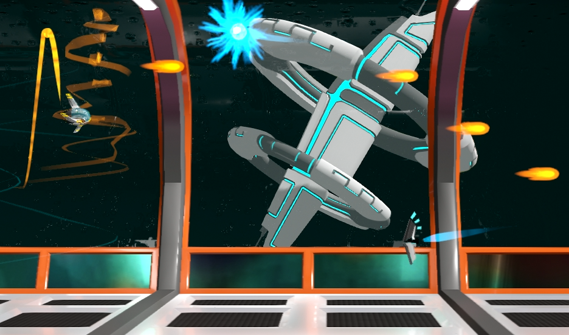

Эффекты частиц улучшают внешний вид игры Sydewinder и помогают отображать физические эффекты, такие как ударные волны или движущие силы. Эффекты частиц могут быть непрерывными эффектами, такими как Выбросы реактивных двигателей или следы дыма, а также одноразовые эффекты, такие как взрывы или светящиеся искры.
Самый простой способ создать новый эффект частиц — с помощью CRYENGINE Sandbox. Для получения дополнительной информации о Particle Editor в CRYENGINE, пожалуйста,для Система частиц глава. ТSydewinder template состоит из нескольких эффектов частиц, созданных с помощью Sandbox. К ним относятся следы оружия, следы двигателей и эффекты взрыва на уровне каньона.
Пример эффектов частиц в Sydewinder. 
Загрузка эффекта частиц
Чтобы взаимодействовать с эффектом частиц, вам сначала нужно найти эффект по имени (как указано в CRYENGINE Sandbox). Используйте FindEffect метод на ParticleManager класс.
DestroyParticleEffect = Engine.ParticleManager.FindEffect("spaceship.Destruction.explosion_blue");Частица может быть немедленно создана в определенной позиции.
DestroyParticleEffect.Spawn(Entity.Position);Излучатели частиц
А ParticleEmitter следует за конкретным объектом и предотвращает появление определенных эффектов в определенной позиции. ParticleEmitter привязан к слоту сущности. Например, корабль игрока стреляет снарядами, которые представляют собой небольшие объекты по умолчанию, которые не видны, поскольку им не присвоена модель, но внешний вид снаряда представлен эффектом частиц желтого пламени, который следует за снарядом.
// Retrieve particle effect.
var weaponBulletParticleEffect = Engine.ParticleManager.FindEffect("spaceship.Weapon.player_shot");
// Assign the particle effect to a emitter slot.
projectileEntity.LoadParticleEmitter(1, weaponBulletParticleEffect);После того, как вы получите эффект пламени из ресурсов уровня каньона, вы можете немедленно загрузите его в слот 1, вызвав LoadParticleEmitter метод. Поскольку long объект не удален, за объектом будет следовать непрерывный эффект.
// Kill the particle trail of the bullet
projectileEntity.GetParticleEmitter(1).Kill();После выпуска снаряда необходимо вызвать Kill метод эмиттера частиц, чтобы остановить его (например, после столкновения пули с врагом). Движок убирает эффект без задержки, но wне прекращая эффект немедленно.